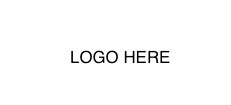

|  |
| What will you be asked to do? |
| 1. Download a mobile app (free) and register an account: You need to have the mPower app on your phone in order to participate in this study. Everyone who enrolls will first complete a consent process explaining the risks and benefits of the study. As part of this process, you will also confirm your agreement to participate in the study. Afterward, we will ask you some questions about the study and ask you to complete an electronic registration process. Registration will include entering your email address and other general information about you. |
| 2. Health Surveys: We will ask you to answer questions about yourself, your medical history, and current health. You may choose to leave any questions you do not wish to answer blank. Additionally, we will ask you daily, weekly and monthly questions about your symptoms. With these questions as well, you can leave any questions that you do not wish to answer blank. |
| 3. Tasks: We will ask you to perform specific tasks while holding or using your mobile phone. Examples of such tasks are:
|
|
to record variations in your voice by saying “aaah” for 10-20 seconds into the microphone
to hold your phone, walk 20 steps forward then 20 steps backward to assess your posture and stability.
to tap on the phone screen in a specific way to test your reaction time and dexterity
|
These tasks should take you no more than 20 minutes each week. You have the right to refuse to answer particular questions or participate in particular aspects of the study.
We will send notices on your phone asking you to complete these tasks and surveys. You may choose to act at your convenience, either then or later and you may choose to participate in all or only in some parts of the study.
|